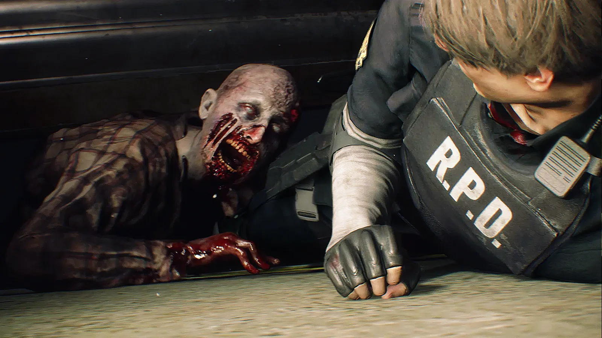

¿Por qué Resident Evil 2 Remake sigue dando miedo?
No necesitas cientos de monstruos ni jumpscares cada cinco minutos para crear terror. Resident Evil 2 Remake demuestra que la verdadera tensión aparece cuando escuchas algo acercarse y no sabes si tienes suficiente munición para enfrentarlo.
Ver caso